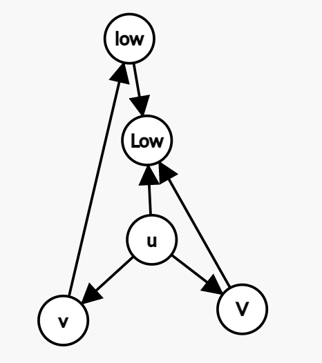

初三和高一写的，平均难度 2800 左右。
给定一张 n 个点 m 条边的带权有向图。
有 q 次询问，每次给定 v,s,t，问是否存在一条起点终点都为 v 的路径满足 t∣(s+l)，其中 l 是路径的总长。
n,m,q≤2×105,0≤s<t≤109，边权均不超过 109。
首先这条路径只能在 v 所在强连通分量的内部。
以下所有的路径长度都是在模 t 意义下的。
引理：在同一个强连通分量，如果 u→v 存在一条长度为 l 的路径，那么 v→u 存在一条长度为 −l 的路径。
构造：根据强连通性 v→u 存在一条路径，设它的长度为 w，先走 v→u，长度为 w，再走 t−1 次 u→v→u，长度为 (t−1)(l+w)，总长度 −l。
在强连通分量的内部，对于一个长度为 w 的环，从 环上 一个点 u 出发绕若干圈再回到 u，所有可能的路径长度为 gcd(w,t) 的倍数。根据引理，对于任意一个点 v，先走 v→u，再绕若干圈，最后走 u→v，就可以凑出所有长度为 gcd(w,t) 倍数的环。
以 r 为根建出 DFS 树，设 φ(u) 表示从 r 沿着树边走到 u 的路径长度，对于每条非树边 (u,v,w)，意味着存在一个长度为 φ(u)+w−φ(v) 的环。设 x=gcd(u,v,w)φ(u)+w−φ(v)，那么所有的可能环长分别为 0,x,2x,3x,⋯。这些环长显然能取到，也可以归纳证明对于任何 r→u 的路径，都有长度 ≡ϕ(u)(modx)。结论：存在合法路径当且仅当 x∣s。
复杂度 O(n+m)。
cpp
1
2
3
4
5
6
7
8
9
10
11
12
13
14
15
16
17
18
19
20
21
22
23
24
25
26
27
28
29
30
31
32
33
34
| #include <bits/stdc++.h>
#define rep(i, l, r) for(int i = (l); i <= (r); i++)
#define per(i, r, l) for(int i = (r); i >= (l); i--)
#define mem(a, b) memset(a, b, sizeof a)
#define For(i, l, r) for(int i = (l), i##e = (r); i < i##e; i++)
#define pb push_back
#define upd(a, b) (a = min(a, b))
using namespace std;
typedef long long ll;
const int N = 2e5 + 5;
int n, m, q;
vector<pair<int, int>> G[N];
int idx, dfn[N], scc[N], stk[N], tp, sid;
ll g[N], d[N], gg[N];
int dfs(int u) {
int low = dfn[u] = ++idx; stk[++tp] = u;
for(auto [v, w] : G[u]) if(!dfn[v]) d[v] = d[u] + w, upd(low, dfs(v));
else if(!scc[v]) upd(low, dfn[v]), g[u] = gcd(g[u], d[u] - d[v] + w);
if(low == dfn[u]) for(int v = (sid++, 0); v ^ u;)
v = stk[tp--], scc[v] = sid, gg[sid] = gcd(gg[sid], g[v]);
return low;
}
int main() {
cin >> n >> m;
int u, v, w;
rep(i, 1, m) scanf("%d%d%d", &u, &v, &w), G[u].emplace_back(v, w);
rep(i, 1, n) if(!dfn[i]) dfs(i);
for(cin >> q; q--; puts(v % gcd(gg[scc[u]], (ll)w) ? "NO" : "YES"))
scanf("%d%d%d", &u, &v, &w);
}
|
给定一张 n 个点 m 条边的简单无向图。
问在图中能否找到两个点，满足这两个点之间有至少三条点不相交的简单路径，有解要打印三条路径。
n,m≤2⋅105 不保证图连通。
考虑 u→v 有三条点不相交的路径会是什么样子，发现有两个环相交了。

反过来，如果任意两个环都不相交，即仙人掌，那就无解。
至此，得到了有解的充要条件：不是仙人掌。
但为了便于打印路径，采用另一种方法。
设 lowu 为 tarjan 算法中的定义，Lowu 表示次小值。
如果 Lowu=dfnu，则子树内的一个点到子树外的一个点至多有两条点不相交的简单路径。
于是存在满足 Lowu<dfnu 的点 u 是有解的必要条件。
观察这张图，如果 lca(v,V)=u，那么 u→Low，u→v→low→Low 和 u→V→Low 是三条点不相交的简单路径。

只要以 u 为根的子树中只有 u 一个点满足 Lowu<dfnu，则 lca(v,V)=u。
在 dfs 过程中第一次找到满足 Lowu<dfnu 的点 u 即符合上一行的条件，因为它是子树中最后判定的点。
复杂度 O(n)。
cpp
1
2
3
4
5
6
7
8
9
10
11
12
13
14
15
16
17
18
19
20
21
22
23
24
25
26
27
28
29
30
31
32
33
34
35
36
37
38
39
40
41
42
43
44
45
46
47
48
49
50
51
52
53
54
55
56
57
58
| #include <bits/stdc++.h>
#define rep(i, l, r) for(int i = (l); i <= (r); i++)
#define per(i, r, l) for(int i = (r); i >= (l); i--)
#define mem(a, b) memset(a, b, sizeof a)
#define For(i, l, r) for(int i = (l), i##e = (r); i < i##e; i++)
#define pb push_back
using namespace std;
const int N = 2e5 + 5;
typedef vector <int> vi;
int n, m; vi G[N];
int idx, dfn[N], fa[N], ma;
struct node {
int u, fa, U, Fa;
node(int uu) { u = fa = U = Fa = uu; }
void upd(int uu, int ffa) {
if(dfn[ffa] < dfn[fa]) U = u, Fa = fa, u = uu, fa = ffa;
else if(dfn[ffa] < dfn[Fa]) U = uu, Fa = ffa;
}
} as(0);
node dfs(int u) {
dfn[u] = ++idx; node lowu(u);
for(int v : G[u]) if(!dfn[v]) {
fa[v] = u;
node lowv = dfs(v);
lowu.upd(lowv.u, lowv.fa), lowu.upd(lowv.U, lowv.Fa);
} else if(dfn[v] < dfn[u] && v ^ fa[u]) lowu.upd(u, v);
if(!ma && dfn[lowu.Fa] < dfn[u]) as = lowu, ma = u;
return lowu;
}
vi find(int s, int t) {
vi p;
while(s ^ t) p.pb(s), s = fa[s];
p.pb(t);
return p;
}
vi p;
void print() {
printf("%llu ", p.size());
for(int u : p) printf("%d ", u);
puts("");
}
int main() {
cin >> n >> m;
int u, v;
rep(i, 1, m) scanf("%d%d", &u, &v), G[u].pb(v), G[v].pb(u);
rep(i, 1, n) if(!ma && !dfn[i]) dfs(i);
if(ma) {
puts("YES");
p = find(ma, as.Fa), print();
p = find(as.U, ma), reverse(p.begin(), p.end());
p.pb(as.Fa), print();
p = find(as.Fa, as.fa); vi t = find(as.u, ma);
p.insert(p.end(), t.begin(), t.end());
reverse(p.begin(), p.end()), print();
} else puts("NO");
return 0;
}
|
给定一个长度为 n 的序列和数 k，求有多少长度大于 1 的区间满足和减最大值是 k 的倍数。
n≤3⋅105,k≤106,ai≤109
先求出前缀和数组 pre。
则条件可以写成 prer≡prel−1+max(modk)。
把 i 插入 vector[preimodk]，通过二分可以快速查询区间中有多少前缀和模 k 余 x。
求出整个序列的最大值的位置为 x。
然后枚举 x 左边的前缀和，查询 x 右边有多少个前缀和与之配对。
因为 x 的位置不确定，所以这样是 O(n2logn)。
但如果每次枚举左右中较短的一段，则复杂度可降为 O(nlog2n)。
其实不用真的分治，只需要单调栈求出每个位置作为最大值的极大区间即可。
cpp
1
2
3
4
5
6
7
8
9
10
11
12
13
14
15
16
17
18
19
20
21
22
23
24
25
26
27
28
29
30
31
32
| #include <bits/stdc++.h>
#define rep(i, l, r) for(int i = (l); i <= (r); i++)
#define per(i, r, l) for(int i = (r); i >= (l); i--)
#define mem(a, b) memset(a, b, sizeof a)
#define For(i, l, r) for(int i = (l), i##e = (r); i < i##e; i++)
#define pb push_back
using namespace std;
typedef long long ll;
const int N = 3e5 + 5;
int n, K, a[N], L[N], R[N], su[N];
vector <int> v[1000000];
int main() {
cin >> n >> K;
rep(i, 1, n) scanf("%d", &a[i]);
v[0].pb(0);
rep(i, 1, n) su[i] = (su[i - 1] + a[i]) % K, v[su[i]].pb(i);
rep(i, 1, n) for(int& j = L[i] = i - 1; j && a[j] <= a[i]; j = L[j]);
per(i, n, 1) for(int& j = R[i] = i + 1; j <= n && a[j] < a[i]; j = R[j]);
long long as = 0;
rep(i, 1, n) if(i - L[i] < R[i] - i) For(j, L[i], i) {
int t = (su[j] + a[i]) % K;
#define lb lower_bound
#define all v[t].begin(), v[t].end()
as += lb(all, R[i]) - lb(all, i);
} else For(j, i, R[i]) {
int t = ((su[j] - a[i]) % K + K) % K;
as += lb(all, i) - lb(all, L[i]);
}
cout << as - n;
return 0;
}
|